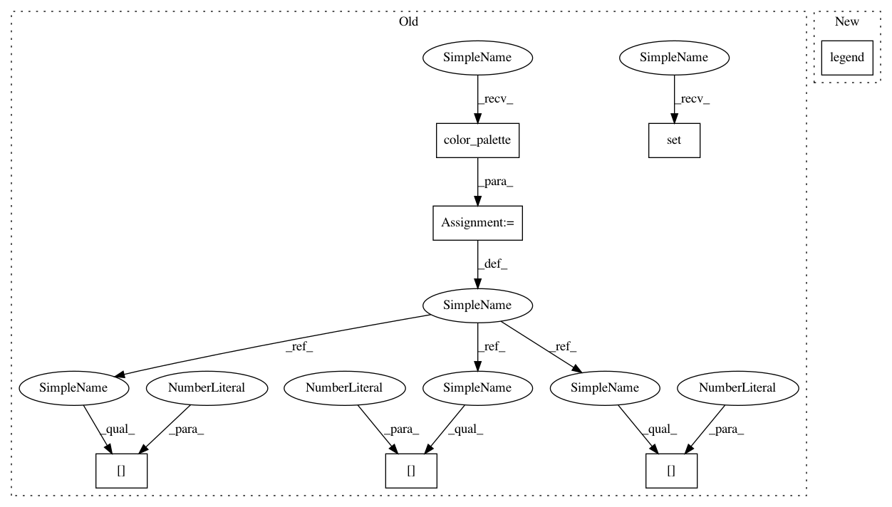

1d62b0c431c821671ef8f251d14cc8ae79b93c76,examples/ensemble/plot_easy_ensemble.py,,,#,18
Before Change
print(__doc__)
sns.set()
// Define some color for the plotting
almost_black = "/�"
palette = sns.color_palette()
// Generate the dataset
X, y = make_classification(n_classes=2, class_sep=2, weights=[0.1, 0.9],
n_informative=3, n_redundant=1, flip_y=0,
n_features=20, n_clusters_per_class=1,
n_samples=5000, random_state=10)
// Instanciate a PCA object for the sake of easy visualisation
pca = PCA(n_components=2)
// Fit and transform x to visualise inside a 2D feature space
X_vis = pca.fit_transform(X)
// Apply Easy Ensemble
ee = EasyEnsemble()
X_resampled, y_resampled = ee.fit_sample(X, y)
X_res_vis = []
for X_res in X_resampled:
X_res_vis.append(pca.transform(X_res))
// Two subplots, unpack the axes array immediately
f, (ax1, ax2) = plt.subplots(1, 2)
ax1.scatter(X_vis[y == 0, 0], X_vis[y == 0, 1], label="Class /ǖ", alpha=0.5,
edgecolor=almost_black, facecolor=palette[0], linewidth=0.15)
ax1.scatter(X_vis[y == 1, 0], X_vis[y == 1, 1], label="Class /Ǘ", alpha=0.5,
edgecolor=almost_black, facecolor=palette[2], linewidth=0.15)
ax1.set_title("Original set")
ax2.scatter(X_vis[y == 0, 0], X_vis[y == 0, 1], label="Class /ǖ", alpha=0.5,
edgecolor=almost_black, facecolor=palette[0], linewidth=0.15)
for iy, e in enumerate(X_res_vis):
ax2.scatter(e[y_resampled[iy] == 1, 0], e[y_resampled[iy] == 1, 1],
label="Class /Ǘ", alpha=0.5, edgecolor=almost_black,
After Change
ax.spines["bottom"].set_position(("outward", 10))
ax.set_xlim([-6, 8])
ax.set_ylim([-6, 6])
ax.legend()
plt.tight_layout()
plt.show()
In pattern: SUPERPATTERN
Frequency: 3
Non-data size: 7
Instances
Project Name: scikit-learn-contrib/imbalanced-learn
Commit Name: 1d62b0c431c821671ef8f251d14cc8ae79b93c76
Time: 2017-03-30
Author: g.lemaitre58@gmail.com
File Name: examples/ensemble/plot_easy_ensemble.py
Class Name:
Method Name:
Project Name: scikit-learn-contrib/imbalanced-learn
Commit Name: 1d62b0c431c821671ef8f251d14cc8ae79b93c76
Time: 2017-03-30
Author: g.lemaitre58@gmail.com
File Name: examples/ensemble/plot_balance_cascade.py
Class Name:
Method Name:
Project Name: scikit-learn-contrib/imbalanced-learn
Commit Name: 1d62b0c431c821671ef8f251d14cc8ae79b93c76
Time: 2017-03-30
Author: g.lemaitre58@gmail.com
File Name: examples/ensemble/plot_easy_ensemble.py
Class Name:
Method Name:
Project Name: scikit-learn-contrib/imbalanced-learn
Commit Name: 1d62b0c431c821671ef8f251d14cc8ae79b93c76
Time: 2017-03-30
Author: g.lemaitre58@gmail.com
File Name: examples/combine/plot_smote_enn.py
Class Name:
Method Name: